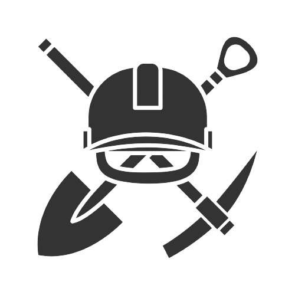

O IFTM - Campus Patos de Minas propõe este projeto do Curso Técnico em Mineração em uma região ávida por profissionais com sólida formação técnica e humana, proporcionando uma formação profissional considerando a realidade concreta no contexto dos arranjos produtivos locais e das vocações sociais, culturais e econômicas regionais, tendo como dimensões indissociáveis o trabalho, a ciência, a cultura, a tecnologia, o ensino a pesquisa e a extensão. Sendo assim, a implantação do Curso Técnico em Mineração Integrado vem a ser um importante instrumento para o contexto da realidade socioeconômica da região e do país.
O perfil do egresso do técnico em Mineração integrado a ser formado pelo IFTM Campus Patos de Minas consiste em um profissional apto a desenvolver, de forma inovadora, atividades relacionadas aos diferentes campos de atuação no segmento da mineração bem como capacidade de adequação e adaptação do exercício profissional no seu contexto de atuação.
Requsitos de aprovação:
No decorrer do curso, deve mobilizar e articular conhecimentos necessários à ação eficiente e eficaz, integrando aportes científicos, tecnológicos e valorativos que permitam:
Ainda pensando no aspecto técnico da profissão de acordo com o Catálogo Nacional de Cursos Técnicos (CNCT) é possibilitado ao profissional Técnico em Mineração adquirir competências para:
| Unidade Curricular | CHT | CHP |
|---|---|---|
| Artes | 33,20 | 33,20 |
| Biologia | 43,20 | 23,20 |
| Ciências Sociais | 33,20 | - |
| Educação Física | 20,00 | 13,20 |
| Empreendedorismo e Inovação | 33,20 | - |
| Espanhol | 33,20 | - |
| Física | 33,20 | 33,20 |
| Geografia e Cartografia | 66,40 | 33,20 |
| Geologia Geral | 100,00 | - |
| História | 66,40 | - |
| Inglês | 66,40 | - |
| Introdução a Metodologia Científica | 33,20 | 33,20 |
| Matemática | 66,40 | 66,40 |
| Mineralogia e Petrografia | 33,20 | 66,40 |
| Português | 66,40 | 33,20 |
| Química Mineral | 66,40 | - |
| Subtotal | 794,00 | 335,20 |
| Subtotal Geral | 1129,20 | |
| Unidade Curricular | CHT | CHP |
|---|---|---|
| Biologia | 43,20 | 23,20 |
| Educação Física | 20,00 | 13,20 |
| Filosofia I | 33,20 | - |
| Física Mineral | 33,20 | 33,20 |
| Geografia | 44,60 | 20,00 |
| Geoprocessamento | 33,20 | 33,20 |
| História | 66,40 | - |
| Lavra | 66,40 | 66,40 |
| Matemática | 100,00 | - |
| Pesquisa Mineral | 33,20 | 33,20 |
| Português | 66,40 | 33,20 |
| Química | 46,40 | 20,00 |
| Robótica Educacional | 13,20 | 20,00 |
| Sociologia | 33,20 | - |
| Topografia e Matemática | 66,40 | 33,20 |
| Tratamento de Minérios I | 50,00 | 16,40 |
| Subtotal | 745,00 | 351,00 |
| Subtotal Geral | 1096,00 | |
| Unidade Curricular | CHT | CHP |
|---|---|---|
| Artes | 20,00 | 13,20 |
| Biologia | 33,20 | 33,20 |
| Desenho Técnico Computadorizado | 33,20 | 33,20 |
| Educação Física | 20,00 | 13,20 |
| Estabilidade de Taludes | 33,20 | 33,20 |
| Filosofia | 33,20 | - |
| Física | 33,20 | 33,20 |
| Geografia | 66,40 | - |
| História | 66,40 | - |
| Libras | 33,20 | - |
| Matemática | 100,00 | 33,20 |
| Português | 66,40 | - |
| Química | 46,40 | 20,00 |
| Redação | 33,20 | - |
| Saúde e Segurança do Trabalho | 25,00 | 8,20 |
| Sociologia | 33,20 | - |
| Tratamento de Minérios II | 33,20 | 66,40 |
| Subtotal | 709,40 | 287,00 |
| Subtotal Geral | 996,40 | |